AI矿策 · LOGO 第二轮：6 个概念
设计要求：简洁、有寓意、让人记得住；突出矿业与金属的贵重感，带一点未来科技感。每个概念都是一个图形，最多两种形体，单色也成立，16px 下能认出来。主配色是“金属金 + 铂金”配深墨底，另给出和方向 C 搭配的“勘探橙”版本。
只用 SVG 路径，不依赖字体不用环形 O、四角星和青绿色避开 OpenAI、Claude、Grok、Gemini 的图形组合标：Noto Sans SC Bold + Barlow SemiBold
01
Ingot
金锭 · A
一块金锭的透视剪影，底部缺口刚好形成字母 A：矿业的终点是金属与财富，A 代表 AI。
02
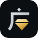
Kuang
矿 · 广下藏石
“矿”由“石”和“广”组成。一笔“广”的屋檐，下面护着一颗切面宝石：屋檐是勘探与守护，宝石是矿产本身。
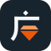
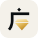
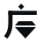
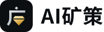
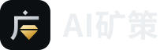
03
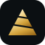
Strata
层峰
一座被地层切开的山：顶层是金色的矿，地层略向一侧倾斜，像地质剖面，也像一路向上的曲线。
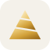
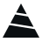
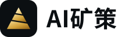
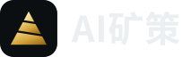
04
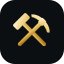
Hammers
锤镐 ⚒
锤与镐交叉，是地图上标注矿山的通用符号。重新画成现代的样子，意思是“这里有矿”，也和“勘探图”方向一脉相承。
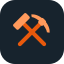
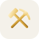
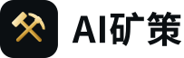
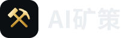
05
Vein
矿脉
一块切面分明的岩石，中间穿过一道金色矿脉，这是找矿人最想看到的画面。矿脉在中段微微转折，像一段向上走的行情线。
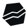
06
Adit
坑道之光
矿洞拱门里亮起一颗金色晶体：AI 照亮矿井深处，把埋在里面的价值带出来。
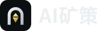
浏览器标签页（16px）
AI矿策 — 全球矿业资讯01
AI矿策 — 全球矿业资讯02
AI矿策 — 全球矿业资讯03
AI矿策 — 全球矿业资讯04
AI矿策 — 全球矿业资讯05
AI矿策 — 全球矿业资讯06
手机桌面图标
社交头像（圆形裁切）
日报刊头（方向 C 配色）
矿业日报 · 2026-11-04
矿业日报 · 2026-11-04
矿业日报 · 2026-11-04
日报刊头（续）
矿业日报 · 2026-11-04
矿业日报 · 2026-11-04
矿业日报 · 2026-11-04